Hugoniot Fits: Coesite#
%%capture
## This cell loads the modules, data, and EOS parameters
## capture magic function hides the output; comment out to see diagnostic info during data load
## Run executable notebook for output
%run -i scripts/set_paths
%run -i scripts/load_modules
%run -i scripts/load_silica_data
%run -i scripts/define_mc
%run -i scripts/define_eos
%run -i scripts/calibrate_decaying_shocks.py
%run -i scripts/load_vapor_domes.py
%run -i scripts/load_liquid_model.py
%run -i scripts/load_solid_models.py
#%run -i scripts/hugoniot-entropy.py # not needed here
%run -i scripts/intersection.py # intersection function
#%run -i scripts/odr_models.py # ODR and model functions - not needed here
%run -i scripts/set_plotstyle.py # customize matplotlib
%run -i scripts/set_colors.py # custom colors
# this notebook's figure name tag
tag = 'CST-'
---------------------------------------------------------------------------
FileNotFoundError Traceback (most recent call last)
File ~/work/silica-supplement/silica-supplement/silica-book/scripts/define_eos.py:265
263 fs_fitTus_stv0.outputfitpath = modelfitpath # in load_paths.py
264 fs_fitTus_stv0.filename = 'fs_fitTus_stv_quadratic'
--> 265 fs_fitTus_stv0.loadjson()
266 fs_hug_stv.T = fs_fitTus_stv0.calcf(fs_hug_stv.us) # calculate temperatures on the solid branch Hugoniot
268 # ------- Fused Silica Transitions -----------
269 #
270 # FS Pressure bounds on the Omega data wiggles
File ~/work/silica-supplement/silica-supplement/silica-book/scripts/hpeos_module.py:351, in HPeos_Fit.loadjson(self)
348 def loadjson(self):
349 # read in json formatted fit record file and then reconstruct a dictionary
350 # need to add a function to load the readable version
--> 351 with open(self.outputfitpath+self.filename+'.txt', 'r') as f:
352 filetext = f.readlines()[0] # read in whole file into text
353 datadict = json.loads(filetext) # convert long string into dictionary
FileNotFoundError: [Errno 2] No such file or directory: './model-fits/fs_fitTus_stv_quadratic.txt'
---------------------------------------------------------------------------
NameError Traceback (most recent call last)
File ~/work/silica-supplement/silica-supplement/silica-book/scripts/calibrate_decaying_shocks.py:20
15 qtz_hug_KD.rho = 1/((1/qtz_hug_KD.rho_ref)*(1-(qtz_hug_KD.up/qtz_hug_KD.us))) # kg/m3
18 # Calibrate Millot & Davies unpublished decaying shocks in alpha-quartz, z cut
19 # high pressure uses the liquid branch of the new Hugoniot fit
---> 20 shockdat_list[MDqtz70811['id']].P = np.interp(shockdat_list[MDqtz70811['id']].us,qtz_hug_liq.us,qtz_hug_liq.P)
21 shockdat_list[MDqtz70811['id']].rho = np.interp(shockdat_list[MDqtz70811['id']].us,qtz_hug_liq.us,qtz_hug_liq.rho)
22 shockdat_list[MDqtz70811['id']].up = np.interp(shockdat_list[MDqtz70811['id']].us,qtz_hug_liq.us,qtz_hug_liq.up)
NameError: name 'qtz_hug_liq' is not defined
---------------------------------------------------------------------------
FileNotFoundError Traceback (most recent call last)
File ~/work/silica-supplement/silica-supplement/silica-book/scripts/load_vapor_domes.py:34
32 C16lows = np.loadtxt(silicadatadir+'Connolly-low-cp.csv',delimiter=',',usecols=[0])
33 C16lowt = np.loadtxt(silicadatadir+'Connolly-low-cp.csv',delimiter=',',usecols=[1])
---> 34 C16bdrho = np.loadtxt(silicadatadir+'Connolly-Fig4b-black-dashed-T-rho.csv',delimiter=',',usecols=[0])/1.e3
35 C16bdtemp = np.loadtxt(silicadatadir+'Connolly-Fig4b-black-dashed-T-rho.csv',delimiter=',',usecols=[1])
37 C16sils = np.loadtxt(silicadatadir+'Connolly-SiL-VWRK.csv',delimiter=',',usecols=[0])
File /opt/hostedtoolcache/Python/3.13.16/x64/lib/python3.13/site-packages/numpy/lib/_npyio_impl.py:1395, in loadtxt(fname, dtype, comments, delimiter, converters, skiprows, usecols, unpack, ndmin, encoding, max_rows, quotechar, like)
1392 if isinstance(delimiter, bytes):
1393 delimiter = delimiter.decode('latin1')
-> 1395 arr = _read(fname, dtype=dtype, comment=comment, delimiter=delimiter,
1396 converters=converters, skiplines=skiprows, usecols=usecols,
1397 unpack=unpack, ndmin=ndmin, encoding=encoding,
1398 max_rows=max_rows, quote=quotechar)
1400 return arr
File /opt/hostedtoolcache/Python/3.13.16/x64/lib/python3.13/site-packages/numpy/lib/_npyio_impl.py:1022, in _read(fname, delimiter, comment, quote, imaginary_unit, usecols, skiplines, max_rows, converters, ndmin, unpack, dtype, encoding)
1020 fname = os.fspath(fname)
1021 if isinstance(fname, str):
-> 1022 fh = np.lib._datasource.open(fname, 'rt', encoding=encoding)
1023 if encoding is None:
1024 encoding = getattr(fh, 'encoding', 'latin1')
File /opt/hostedtoolcache/Python/3.13.16/x64/lib/python3.13/site-packages/numpy/lib/_datasource.py:192, in open(path, mode, destpath, encoding, newline)
155 """
156 Open `path` with `mode` and return the file object.
157
(...) 188
189 """
191 ds = DataSource(destpath)
--> 192 return ds.open(path, mode, encoding=encoding, newline=newline)
File /opt/hostedtoolcache/Python/3.13.16/x64/lib/python3.13/site-packages/numpy/lib/_datasource.py:529, in DataSource.open(self, path, mode, encoding, newline)
526 return _file_openers[ext](found, mode=mode,
527 encoding=encoding, newline=newline)
528 else:
--> 529 raise FileNotFoundError(f"{path} not found.")
FileNotFoundError: ../data_silica_db/Connolly-Fig4b-black-dashed-T-rho.csv not found.
fig, ax = plt.subplots(figsize=fsize)
ax.set_prop_cycle(custom_cycler)
#plt.title('Coesite Temperature Inversion')
plt.plot(shockdat_list[F24cst43939['id']].us,shockdat_list[F24cst43939['id']].T,'.',color='b',markersize=1)
plt.fill_between(shockdat_list[F24cst43939['id']].us,shockdat_list[F24cst43939['id']].T-shockdat_list[F24cst43939['id']].T_std,shockdat_list[F24cst43939['id']].T+shockdat_list[F24cst43939['id']].T_std, color='blue', alpha = 0.1,label='43939')
plt.plot([cst_wiggle_us1,cst_wiggle_us1],[4000,12000],'k--')
plt.plot([cst_wiggle_us2,cst_wiggle_us2],[4000,12000],'k--')
plt.xlim(8.5,13)
plt.ylim(4000,10000)
plt.legend(title='Coesite',fontsize=lfss)
plt.xlabel('Shock Velocity (km/s)')
plt.ylabel('Temperature (K)')
plt.show()
cst_wiggle_up1 = np.interp(cst_wiggle_us1,cst_hug_liq.us,cst_hug_liq.up)
cst_wiggle_up2 = np.interp(cst_wiggle_us2,cst_hug_liq.us,cst_hug_liq.up)
cst_wiggle_P1 = np.interp(cst_wiggle_us1,cst_hug_liq.us,cst_hug_liq.P)
cst_wiggle_P2 = np.interp(cst_wiggle_us2,cst_hug_liq.us,cst_hug_liq.P)
print(cst_wiggle_up1,cst_wiggle_up2)
---------------------------------------------------------------------------
NameError Traceback (most recent call last)
Cell In[2], line 8
4 #plt.title('Coesite Temperature Inversion')
5 plt.plot(shockdat_list[F24cst43939['id']].us,shockdat_list[F24cst43939['id']].T,'.',color='b',markersize=1)
6 plt.fill_between(shockdat_list[F24cst43939['id']].us,shockdat_list[F24cst43939['id']].T-shockdat_list[F24cst43939['id']].T_std,shockdat_list[F24cst43939['id']].T+shockdat_list[F24cst43939['id']].T_std, color='blue', alpha = 0.1,label='43939')
7
----> 8 plt.plot([cst_wiggle_us1,cst_wiggle_us1],[4000,12000],'k--')
9 plt.plot([cst_wiggle_us2,cst_wiggle_us2],[4000,12000],'k--')
10
11 plt.xlim(8.5,13)
NameError: name 'cst_wiggle_us1' is not defined
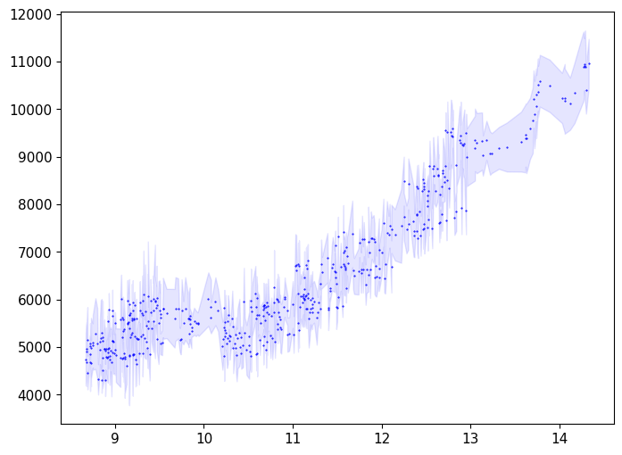
Us-up fits#
print(shockdat_list[P81cst['id']].up)
plt.errorbar(shockdat_list[F24cst['id']].up,shockdat_list[F24cst['id']].us,fmt='kD',mfc='white',label=F24cst['lab'],\
xerr=shockdat_list[F24cst['id']].up_std,yerr=shockdat_list[F24cst['id']].us_std)
plt.errorbar(shockdat_list[L02cst['id']].up,shockdat_list[L02cst['id']].us,fmt='ko',mfc='white',label=L02cst['lab'],\
xerr=shockdat_list[L02cst['id']].up_std,yerr=shockdat_list[L02cst['id']].us_std)
plt.errorbar(shockdat_list[P81cst['id']].up,shockdat_list[P81cst['id']].us,fmt='kX',label=P81cst['lab'],)
cst_P_all1 = [shockdat_list[P81cst['id']].P,shockdat_list[L02cst['id']].P,shockdat_list[F24cst['id']].P]
cst_P_all = np.concatenate([np.atleast_1d(x) for x in cst_P_all1])
cst_up_all1 = [shockdat_list[P81cst['id']].up,shockdat_list[L02cst['id']].up,shockdat_list[F24cst['id']].up]
cst_up_all = np.concatenate([np.atleast_1d(x) for x in cst_up_all1])
cst_up_std_all1 = [shockdat_list[P81cst['id']].up*.02,shockdat_list[L02cst['id']].up_std,shockdat_list[F24cst['id']].up_std]
cst_up_std_all = np.concatenate([np.atleast_1d(x) for x in cst_up_std_all1])
# assume 2% errors in Podurets 1981 velocities
cst_us_all1 = [shockdat_list[P81cst['id']].us,shockdat_list[L02cst['id']].us,shockdat_list[F24cst['id']].us]
cst_us_all = np.concatenate([np.atleast_1d(x) for x in cst_us_all1])
cst_us_std_all1 = [shockdat_list[P81cst['id']].us*.02,shockdat_list[L02cst['id']].us_std,shockdat_list[F24cst['id']].us_std]
cst_us_std_all = np.concatenate([np.atleast_1d(x) for x in cst_us_std_all1])
r1 = np.full(len(shockdat_list[P81cst['id']].up), shockdat_list[P81cst['id']].refidlist[1], dtype=int)
r2 = np.full(len(shockdat_list[L02cst['id']].up), shockdat_list[L02cst['id']].refidlist[1], dtype=int)
r3 = np.full(len(shockdat_list[F24cst['id']].up), shockdat_list[F24cst['id']].refidlist[1], dtype=int)
cst_refid_all1 = np.concatenate((r1,r2,r3))
cst_refid_all = np.concatenate([np.atleast_1d(x) for x in cst_refid_all1])
if 0:
ind = np.where(shockdat_list[F24cst['id']].P>200)
fitupcst1 = [shockdat_list[F24cst['id']].up[ind]]
fitupcst = np.concatenate([np.atleast_1d(x) for x in fitupcst1])
fituperrcst1 = [shockdat_list[F24cst['id']].up_std[ind]]
fituperrcst = np.concatenate([np.atleast_1d(x) for x in fituperrcst1])
fituscst1 = [shockdat_list[F24cst['id']].us[ind]]
fituscst = np.concatenate([np.atleast_1d(x) for x in fituscst1])
fituserrcst1 = [shockdat_list[F24cst['id']].us_std[ind]]
fituserrcst = np.concatenate([np.atleast_1d(x) for x in fituserrcst1])
print(fituperrcst/fitupcst)
print(fituserrcst/fituscst)
if 1:
ind = np.where((cst_up_all > 2.5) & (cst_up_all < 4.25))
fitx = cst_up_all[ind]
fitf= cst_us_all[ind]
fitx_std = cst_up_std_all[ind]
fitf_std = cst_us_std_all[ind]
fitrefid = cst_refid_all[ind]
fitreflist=[]
for i in np.unique(fitrefid):
fitreflist.append(str(i)+': '+ref_list[i].reference[0])
# initialize the HPeos_Fit class
cst_fit_cacl2 = hp.HPeos_Fit()
cst_fit_cacl2.matid = 149
cst_fit_cacl2.material = 'Coesite'
cst_fit_cacl2.formula = 'SiO2'
cst_fit_cacl2.rho_ref = 2.92
cst_fit_cacl2.rho_ref_std = 0.03
cst_fit_cacl2.rho_ref_units = 'g/cm³'
cst_fit_cacl2.x = fitx
cst_fit_cacl2.f = fitf
cst_fit_cacl2.x_std = fitx_std
cst_fit_cacl2.f_std = fitf_std
cst_fit_cacl2.refid = fitrefid
cst_fit_cacl2.reflist = fitreflist
cst_fit_cacl2.x_var = 'up'
cst_fit_cacl2.f_var = 'us'
cst_fit_cacl2.x_units = 'km/s'
cst_fit_cacl2.f_units = 'km/s'
cst_fit_cacl2.x_desc = 'Particle Velocity'
cst_fit_cacl2.f_desc = 'Shock Velocity'
cst_fit_cacl2.phase_fit = 'CaCl2'
cst_fit_cacl2.remlist.append('Fit to solid region on the Hugoniot.')
DateTime_in_ISOFormat = datetime.datetime.now(zoneinfo.ZoneInfo('UTC')).isoformat('T', 'seconds') #
cst_fit_cacl2.actions = [['Sarah T. Stewart','create',DateTime_in_ISOFormat,'new fit']]
cst_fit_cacl2.curvetype = 'linear'
cst_fit_cacl2.outputfitpath = outputfitpath # in load_paths.py
cst_fit_cacl2.filename = 'cst_fit_cacl2_linear'
cst_fit_cacl2.fit()
print('FIT EOS a = ',cst_fit_cacl2.a)
print('FIT EOS cov = ',cst_fit_cacl2.cov)
cst_fit_cacl2.savejson()
cst_fit_cacl2.savereadable()
print('rms = ',cst_fit_cacl2.rms)
print('cst_fit_cacl2 check:')
cst_fit_cacl2.comparecoefs(cst_fit_cacl20.a)
nup = np.arange(min(fitx),7,.01)
nus = cst_fit_cacl2.calcf(nup)
plt.plot(nup,nus,'r--',label='linear')
if 1:
ind = np.where(cst_P_all>200)
fitx = cst_up_all[ind]
fitf= cst_us_all[ind]
fitx_std = cst_up_std_all[ind]
fitf_std = cst_us_std_all[ind]
fitrefid = cst_refid_all[ind]
fitreflist=[]
for i in np.unique(fitrefid):
fitreflist.append(str(i)+': '+ref_list[i].reference[0])
# initialize the HPeos_Fit class
cst_fit_liq = hp.HPeos_Fit()
cst_fit_liq.matid = 149
cst_fit_liq.material = 'Coesite'
cst_fit_liq.formula = 'SiO2'
cst_fit_liq.rho_ref = 2.92
cst_fit_liq.rho_ref_std = 0.03
cst_fit_liq.rho_ref_units = 'g/cm³'
cst_fit_liq.x = fitx
cst_fit_liq.f = fitf
cst_fit_liq.x_std = fitx_std
cst_fit_liq.f_std = fitf_std
cst_fit_liq.refid = fitrefid
cst_fit_liq.reflist = fitreflist
cst_fit_liq.x_var = 'up'
cst_fit_liq.f_var = 'us'
cst_fit_liq.x_units = 'km/s'
cst_fit_liq.f_units = 'km/s'
cst_fit_liq.x_desc = 'Particle Velocity'
cst_fit_liq.f_desc = 'Shock Velocity'
cst_fit_liq.phase_fit = 'liquid'
cst_fit_liq.remlist.append('Fit to liquid region on the Hugoniot.')
DateTime_in_ISOFormat = datetime.datetime.now(zoneinfo.ZoneInfo('UTC')).isoformat('T', 'seconds') #
cst_fit_liq.actions = [['Sarah T. Stewart','create',DateTime_in_ISOFormat,'new fit']]
cst_fit_liq.curvetype = 'linear'
cst_fit_liq.outputfitpath = outputfitpath # in load_paths.py
cst_fit_liq.filename = 'cst_fit_liq_linear'
cst_fit_liq.fit()
print('FIT EOS a = ',cst_fit_liq.a)
print('FIT EOS cov = ',cst_fit_liq.cov)
cst_fit_liq.savejson()
cst_fit_liq.savereadable()
print('rms = ',cst_fit_liq.rms)
print('cst_fit_liq check:')
cst_fit_liq.comparecoefs(cst_fit_liq0.a)
plt.plot(fitx,fitf,'mo',markersize=10)
nup = np.arange(4,max(fitx),.01)
nus = cst_fit_liq.calcf(nup)
plt.plot(nup,nus,'r:',label='linear')
plt.xlabel('Particle Velocity (km/s)')
plt.ylabel('Shock Velocity (km/s)')
plt.title('Coesite Hugoniot')
#plt.xlim(2,12)
#plt.ylim(5,20)
plt.legend()
#plt.plot([2.5,2.5],[5,20])
#plt.plot([4.25,4.25],[5,20])
figname='cst-us-up'
plt.tight_layout()
plt.savefig(outputfigpath+figname+'.pdf')
plt.show()
[0.66 1.11 1.48 2.04 2.86 3.48 4.05]
FIT EOS a = [2.59532144 1.68055338]
FIT EOS cov = [[ 0.15506464 -0.0452009 ]
[-0.0452009 0.01334589]]
Saved EOS fit in cst_fit_cacl2_linear.txt
Saved EOS fit in readable file cst_fit_cacl2_linear-readable.txt
rms = 0.06196020877346302
cst_fit_cacl2 check:
Coefficients are the same.
[2.59532144 1.68055338]
[2.59532144 1.68055338]
FIT EOS a = [4.00563039 1.40740132]
FIT EOS cov = [[ 0.32098594 -0.03182132]
[-0.03182132 0.00338922]]
Saved EOS fit in cst_fit_liq_linear.txt
Saved EOS fit in readable file cst_fit_liq_linear-readable.txt
rms = 0.24594546590549066
cst_fit_liq check:
Coefficients are the same.
[4.00563039 1.40740132]
[4.00563039 1.40740132]
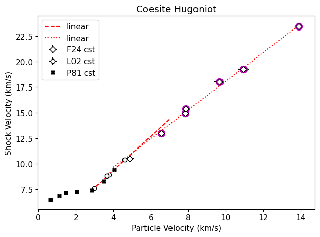
ind = np.where(stsmcsmooth.P <=550)[0]
plt.plot(stsmcsmooth.P[ind],stsmcsmooth.T[ind],'m-',linewidth=3,label='Proposed melt curve')
plt.fill_between(stsmcsmooth.P,stsmcsmooth.T-150,stsmcsmooth.T+150,color='magenta',alpha=0.1)
ind = np.where(stsmcsmooth.P >=550)[0]
plt.plot(stsmcsmooth.P[ind],stsmcsmooth.T[ind],'m:',linewidth=3)
# Plot Andrault et al. 2022 triple points
#plt.plot([Pt1, 40, Pt2],[Tt1,4800,Tt2],'mD')
#plt.plot([Pt3],[Tt3],'mD')#,mfc='white') # estimate from extrapolated T04 GGA boundary; same value
#plt.plot(C84939[:,0],C84939[:,9],'.')
#plt.plot(C84941[:,1],C84941[:,9],'.')
#plt.plot(C84943[:,0],C84943[:,9],'.')
#plt.plot(C43939.P,C43939.T,'.')
#plt.plot(C43941.P,C43941.T,'.')
#plt.plot(C43943.P,C43943.T,'.')
plt.plot(C43939.P,C43939.T,'.',color='b',markersize=1)
plt.fill_between(C43939.P,C43939.T-C43939.T_std,C43939.T+C43939.T_std, color='blue', alpha = 0.1)
#plt.plot(C43941.P,C43941.T,'.',color='orange',markersize=1)
#plt.fill_between(C43941.P,C43941.T-C43941.T_std,C43941.T+C43941.T_std, color='orange', alpha = 0.1)
#plt.plot(C43943.P,C43943.T,'.',color='green',markersize=1)
#plt.fill_between(C43943.P,C43943.T-C43943.T_std,C43943.T+C43943.T_std, color='green', alpha = 0.1)
plt.xlim(75,250)
plt.ylim(4000,10000)
plt.plot([cst_liquidus_P,cst_liquidus_P],[4000,12000],'k--')
#dong_dat = np.loadtxt('../data_silica_db/dong-mc.csv',skiprows=0,delimiter=',')
#plt.plot(dong_dat[:,0],dong_dat[:,1],'--',color='red',label='Dong et al. MC')
plt.xlabel('Pressure (GPa)')
plt.ylabel('Temperature (K)')
plt.show()
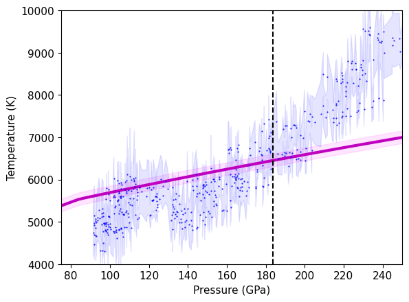
ind = np.where(stsmcsmooth.P <=550)[0]
plt.plot(stsmcsmooth.P[ind],stsmcsmooth.T[ind],'m-',linewidth=3,label='Proposed melt curve')
plt.fill_between(stsmcsmooth.P,stsmcsmooth.T-150,stsmcsmooth.T+150,color='magenta',alpha=0.1)
ind = np.where(stsmcsmooth.P >=550)[0]
plt.plot(stsmcsmooth.P[ind],stsmcsmooth.T[ind],'m:',linewidth=3)
plt.plot(C43939.P,C43939.T,'.',color='b',markersize=1)
plt.fill_between(C43939.P,C43939.T-C43939.T_std,C43939.T+C43939.T_std, color='blue', alpha = 0.1)
plt.plot(C43941.P,C43941.T,'.',color='orange',markersize=1)
plt.fill_between(C43941.P,C43941.T-C43941.T_std,C43941.T+C43941.T_std, color='orange', alpha = 0.1)
plt.plot(C43943.P,C43943.T,'.',color='green',markersize=1)
plt.fill_between(C43943.P,C43943.T-C43943.T_std,C43943.T+C43943.T_std, color='green', alpha = 0.1)
plt.xlim(50,550)
plt.ylim(4000,20000)
plt.plot([cst_liquidus_P,cst_liquidus_P],[4000,12000],'k--')
#dong_dat = np.loadtxt('../data_silica_db/dong-mc.csv',skiprows=0,delimiter=',')
#plt.plot(dong_dat[:,0],dong_dat[:,1],'--',color='red',label='Dong et al. MC')
plt.xlabel('Pressure (GPa)')
plt.ylabel('Temperature (K)')
plt.show()
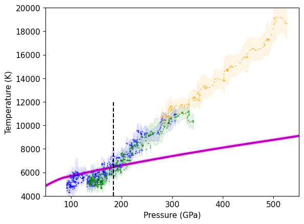
if 1:
tmpup = cst_hug_cacl2.up
tmpus = cst_hug_cacl2.us
tmpp = cst_hug_cacl2.P
tmprho = cst_hug_cacl2.rho
plt.plot(tmprho,tmpp)
trange = np.asarray([4000,4500,5000,5500,5900])
rrange = np.zeros(len(trange))
prange = np.zeros(len(trange))
x,y = intersection(tmprho,tmpp,stvpvt.rhoarr,stvpvt.p4000)
print(x,y)
rrange[0] = x[0]
prange[0] = y[0]
x,y = intersection(tmprho,tmpp,stvpvt.rhoarr,stvpvt.p4500)
print(x,y)
rrange[1] = x[0]
prange[1] = y[0]
x,y = intersection(tmprho,tmpp,stvpvt.rhoarr,stvpvt.p5000)
print(x,y)
rrange[2] = x[0]
prange[2] = y[0]
x,y = intersection(tmprho,tmpp,stvpvt.rhoarr,stvpvt.p5500)
print(x,y)
rrange[3] = x[0]
prange[3] = y[0]
x,y = intersection(tmprho,tmpp,stvpvt.rhoarr,stvpvt.p5900)
print(x,y)
rrange[4] = x[0]
prange[4] = y[0]
usrange = np.interp(prange,tmpp,tmpus)
plt.show()
plt.plot(usrange,trange,'-x')
[5.00708396] [91.39509724]
[5.07776448] [102.28031604]
[5.13032202] [111.27237729]
[5.17361327] [119.32368504]
[5.20272417] [125.09503811]
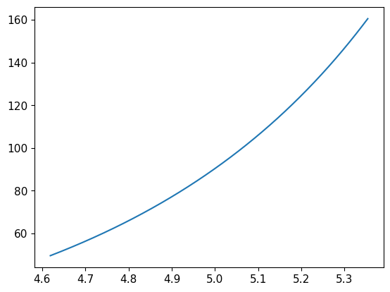
[<matplotlib.lines.Line2D at 0x17fe2bb10>]
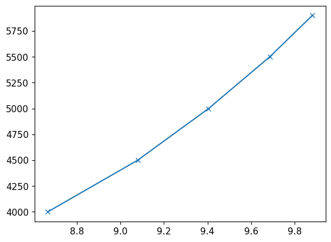
ind39 = np.where(C43939.P > 200)
ind41 = np.where(C43941.P > 200)
ind43 = np.where(C43943.P > 200)
ind39 = np.where(C43939.us > cst_wiggle_us2)
ind41 = np.where(C43941.us > cst_wiggle_us2)
ind43 = np.where(C43943.us > cst_wiggle_us2)
fituscst1 = [C43939.us[ind39],C43941.us[ind41],C43943.us[ind43]]
fituscst = np.concatenate([np.atleast_1d(x) for x in fituscst1])
fittcst1 = [C43939.T[ind39],C43941.T[ind41],C43943.T[ind43]]
fittcst = np.concatenate([np.atleast_1d(x) for x in fittcst1])
fitterrcst1 = [C43939.T_std[ind39],C43941.T_std[ind41],C43943.T_std[ind43]]
fitterrcst = np.concatenate([np.atleast_1d(x) for x in fitterrcst1])
plt.plot(C43939.us,C43939.T,'.',color='b',markersize=1)
plt.fill_between(C43939.us,C43939.T-C43939.T_std,C43939.T+C43939.T_std, color='blue', alpha = 0.1)
plt.plot(C43941.us,C43941.T,'.',color='orange',markersize=1)
plt.fill_between(C43941.us,C43941.T-C43941.T_std,C43941.T+C43941.T_std, color='orange', alpha = 0.1)
plt.plot(C43943.us,C43943.T,'.',color='green',markersize=1)
plt.fill_between(C43943.us,C43943.T-C43943.T_std,C43943.T+C43943.T_std, color='green', alpha = 0.1)
plt.plot(cst_hug_liq.us,cst_hug_liq.T,'--',label='New Cst Hug Liquid')
r1 = np.full(len(fituscst), shockdat_list[F24cst['id']].refidlist[1], dtype=int)
reflist=[]
for i in np.unique(r1):
reflist.append(str(i)+': '+ref_list[i].reference[0])
if 1:
# use new fitting system
print('HPEOS T-Us FIT LIQUID REGION')
# initialize the HPeos_Fit class
cst_fitTus_liq = hp.HPeos_Fit()
cst_fitTus_liq.matid = 149
cst_fitTus_liq.material = 'Coesite'
cst_fitTus_liq.formula = 'SiO2'
cst_fitTus_liq.rho_ref = 2.92
cst_fitTus_liq.rho_ref_units = 'g/cm³'
cst_fitTus_liq.x = fituscst
cst_fitTus_liq.f = fittcst
cst_fitTus_liq.x_std = fituscst*.01 # assumed
cst_fitTus_liq.f_std = fitterrcst
cst_fitTus_liq.refid = r1
cst_fitTus_liq.reflist = reflist
cst_fitTus_liq.x_var = 'us'
cst_fitTus_liq.f_var = 'T'
cst_fitTus_liq.x_units = 'km/s'
cst_fitTus_liq.f_units = 'K'
cst_fitTus_liq.x_desc = 'Shock Velocity'
cst_fitTus_liq.f_desc = 'Temperature'
cst_fitTus_liq.phase_fit = 'liquid'
cst_fitTus_liq.remlist.append('Fit to liquid region on the Hugoniot including supercooled region.')
DateTime_in_ISOFormat = datetime.datetime.now(zoneinfo.ZoneInfo('UTC')).isoformat('T', 'seconds') #
cst_fitTus_liq.actions = [['Sarah T. Stewart','create',DateTime_in_ISOFormat,'new fit']]
cst_fitTus_liq.curvetype = 'quadratic'
cst_fitTus_liq.outputfitpath = outputfitpath # in load_paths.py
cst_fitTus_liq.filename = 'cst_fitTus_liq_quadratic'
cst_fitTus_liq.fit()
print('FIT EOS a = ',cst_fitTus_liq.a)
print('FIT EOS cov = ',cst_fitTus_liq.cov)
cst_fitTus_liq.savejson()
cst_fitTus_liq.savereadable()
print('rms = ',cst_fitTus_liq.rms)
print('cst_fitTus_liq check:')
cst_fitTus_liq.comparecoefs(cst_fitTus_liq0.a)
nup = np.arange(.8*cst_fitTus_liq.xrange[0],1.2*cst_fitTus_liq.xrange[1],.04)
nus = cst_fitTus_liq.calcf(nup)
#plt.plot(fitus,fittemp,'rX')
plt.plot(nup,nus,'r-',label='liquid T-Us quadratic')
plt.ylim(4000,20000)
plt.xlabel('Shock Velocity (km/s)')
plt.ylabel('Temperature (K)')
plt.title('Coesite Temperature Fit')
plt.legend(fontsize=lfss)
plt.xlim(8,19)
plt.ylim(2500,22000)
plt.show()
HPEOS T-Us FIT LIQUID REGION
FIT EOS a = [-1474.22116721 -116.72424841 68.71354409]
FIT EOS cov = [[ 1.03177041e+06 -1.63159569e+05 6.33179124e+03]
[-1.63159569e+05 2.59177416e+04 -1.01083446e+03]
[ 6.33179124e+03 -1.01083446e+03 3.96533619e+01]]
Saved EOS fit in cst_fitTus_liq_quadratic.txt
Saved EOS fit in readable file cst_fitTus_liq_quadratic-readable.txt
rms = 493.51736651674764
cst_fitTus_liq check:
Coefficients are the same.
[-1474.22116721 -116.72424841 68.71354409]
[-1474.22116721 -116.72424841 68.71354409]
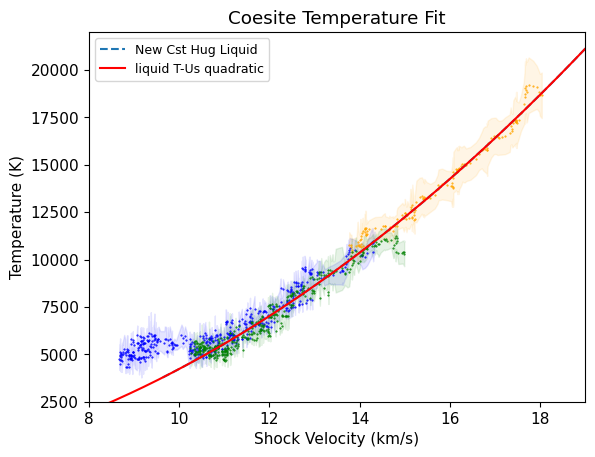
if 1:
tmpup = cst_hug_cacl2.up
tmpus = cst_hug_cacl2.us
tmpp = cst_hug_cacl2.P
tmprho = cst_hug_cacl2.rho
plt.plot(tmprho,tmpp)
trange = np.asarray([4000,4500,5000,5500,5900])
rrange = np.zeros(len(trange))
prange = np.zeros(len(trange))
x,y = intersection(tmprho,tmpp,stvpvt.rhoarr,stvpvt.p4000)
print(x,y)
rrange[0] = x[0]
prange[0] = y[0]
x,y = intersection(tmprho,tmpp,stvpvt.rhoarr,stvpvt.p4500)
print(x,y)
rrange[1] = x[0]
prange[1] = y[0]
x,y = intersection(tmprho,tmpp,stvpvt.rhoarr,stvpvt.p5000)
print(x,y)
rrange[2] = x[0]
prange[2] = y[0]
x,y = intersection(tmprho,tmpp,stvpvt.rhoarr,stvpvt.p5500)
print(x,y)
rrange[3] = x[0]
prange[3] = y[0]
x,y = intersection(tmprho,tmpp,stvpvt.rhoarr,stvpvt.p5900)
print(x,y)
rrange[4] = x[0]
prange[4] = y[0]
usrange = np.interp(prange,tmpp,tmpus)
plt.show()
plt.plot(usrange,trange,'-x')
[5.00708396] [91.39509724]
[5.07776448] [102.28031604]
[5.13032202] [111.27237729]
[5.17361327] [119.32368504]
[5.20272417] [125.09503811]
[<matplotlib.lines.Line2D at 0x17fc28410>]
ind = np.where(stsmcsmooth.P <=550)[0]
plt.plot(stsmcsmooth.P[ind],stsmcsmooth.T[ind],'m-',linewidth=3,label='Proposed melt curve')
plt.fill_between(stsmcsmooth.P,stsmcsmooth.T-150,stsmcsmooth.T+150,color='magenta',alpha=0.1)
ind = np.where(stsmcsmooth.P >=550)[0]
plt.plot(stsmcsmooth.P[ind],stsmcsmooth.T[ind],'m:',linewidth=3)
plt.plot(C43939.P,C43939.T,'.',color='b',markersize=1)
plt.fill_between(C43939.P,C43939.T-C43939.T_std,C43939.T+C43939.T_std, color='blue', alpha = 0.1,label='C43939')
plt.plot(C43941.P,C43941.T,'.',color='orange',markersize=1)
plt.fill_between(C43941.P,C43941.T-C43941.T_std,C43941.T+C43941.T_std, color='orange', alpha = 0.1,label='C43941')
plt.plot(C43943.P,C43943.T,'.',color='green',markersize=1)
plt.fill_between(C43943.P,C43943.T-C43943.T_std,C43943.T+C43943.T_std, color='green', alpha = 0.1,label='C43943')
plt.plot(cst_hug_liq.P,cst_hug_liq.T,'k--',label='New Cst Hug: Liquid branch')#$,linewidth=2)
plt.xlim(50,550)
plt.ylim(4000,20000)
plt.xlabel('Pressure (GPa)')
plt.ylabel('Temperature (K)')
plt.legend()
plt.show()
# zoom in
ind = np.where(stsmcsmooth.P <=550)[0]
plt.plot(stsmcsmooth.P[ind],stsmcsmooth.T[ind],'m-',linewidth=3,label='Proposed melt curve')
plt.fill_between(stsmcsmooth.P,stsmcsmooth.T-150,stsmcsmooth.T+150,color='magenta',alpha=0.1)
ind = np.where(stsmcsmooth.P >=550)[0]
plt.plot(stsmcsmooth.P[ind],stsmcsmooth.T[ind],'m:',linewidth=3)
ind = np.where(stsmcsmooth.P <=550)[0]
x,y=intersection(stsmcsmooth.P[ind],stsmcsmooth.T[ind],cst_hug_liq.P,cst_hug_liq.T)
print('p,t cross liquidus = ',x,y)
pcross2=x
print('up cross liq = ',np.interp(x,cst_hug_liq.P,cst_hug_liq.up))
print('us cross liq = ',np.interp(x,cst_hug_liq.P,cst_hug_liq.us))
print('rho cross liq = ',np.interp(x,cst_hug_liq.P,cst_hug_liq.rho))
if 0:
plt.plot(C43939.P,C43939.T,'.',color='b',markersize=1)
plt.fill_between(C43939.P,C43939.T-C43939.T_std,C43939.T+C43939.T_std, color='blue', alpha = 0.1)
plt.plot(C43941.P,C43941.T,'.',color='orange',markersize=1)
plt.fill_between(C43941.P,C43941.T-C43941.T_std,C43941.T+C43941.T_std, color='orange', alpha = 0.1)
plt.plot(C43943.P,C43943.T,'.',color='green',markersize=1)
plt.fill_between(C43943.P,C43943.T-C43943.T_std,C43943.T+C43943.T_std, color='green', alpha = 0.1)
plt.plot(C43939.P,C43939.T,'.',color='b',markersize=1)
plt.fill_between(C43939.P,C43939.T-C43939.T_std,C43939.T+C43939.T_std, color='blue', alpha = 0.1,label='C43939')
plt.plot(C43941.P,C43941.T,'.',color='orange',markersize=1)
plt.fill_between(C43941.P,C43941.T-C43941.T_std,C43941.T+C43941.T_std, color='orange', alpha = 0.1,label='C43941')
plt.plot(C43943.P,C43943.T,'.',color='green',markersize=1)
plt.fill_between(C43943.P,C43943.T-C43943.T_std,C43943.T+C43943.T_std, color='green', alpha = 0.1,label='C43943')
plt.plot([cst_liq_cross.P],[cst_liq_cross.T],'o',color='black')
plt.plot([cst_sol_cross.P],[cst_sol_cross.T],'o',color='black')
plt.plot(prange,trange,'-X')
plt.xlim(50,300)
plt.ylim(3000,12000)
plt.legend()
plt.xlabel('Pressure (GPa)')
plt.ylabel('Temperature (K)')
plt.tight_layout()
plt.savefig(outputfigpath+'Cst-hug-PT.pdf')
plt.show()
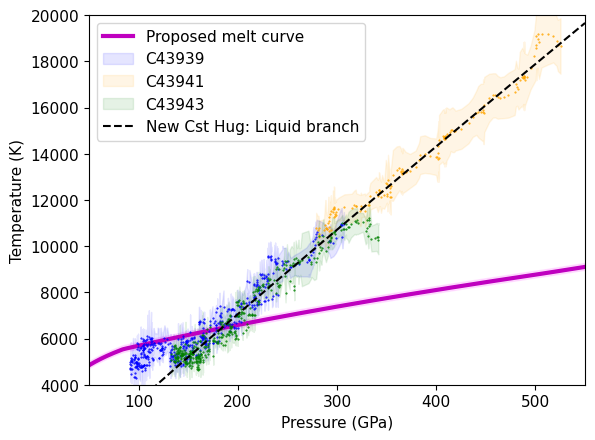
p,t cross liquidus = [183.61347134] [6449.00922951]
up cross liq = [5.41098272]
us cross liq = [11.62105462]
rho cross liq = [5.46426516]
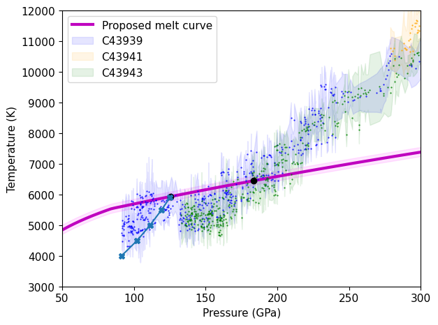
plt.plot(usrange,trange,'x-')
res,cov = np.polyfit(usrange,trange,2,cov=True)
print(res,cov)
tmptemp = res[2]+res[1]*tmpus+res[0]*tmpus*tmpus
plt.plot(tmpus,tmptemp)
tcrosssol = np.interp(cst_sol_cross.us,tmpus,tmptemp)
print(tcrosssol)
# Temperatures are model values: the coesite solid-region Hugoniot fit (cst_fit_cacl2,
# data from Podurets et al. 1981 and Luo et al. 2002) intersected with the stishovite
# Mie-Grueneisen isotherms built on the Driver et al. (2010) 4000 K isotherm.
r1 = np.full(len(usrange), shockdat_list[A23qtz['id']].refidlist[1], dtype=int) # 288: model (this work)
reflist = [str(i)+': '+ref_list[i].reference[0] for i in np.unique(r1)]
# sources of the Hugoniot used to place the model points (same refids as cst_fit_cacl2_linear)
for i in np.unique(cst_fit_cacl2.refid):
reflist.append(str(i)+': '+ref_list[i].reference[0])
# EOS source (not in the reference database)
reflist.append('-1: Driver, K. P., Cohen, R. E., Wu, Z., Militzer, B., Rios, P. L., Towler, M. D., '
'Needs, R. J., & Wilkins, J. W. (2010). Quantum Monte Carlo computations of phase '
'stability, equations of state, and elasticity of high-pressure silica. PNAS, 107(21), '
'9519-9524. https://doi.org/10.1073/pnas.0912130107')
if 1:
# use new fitting system
print('HPEOS T-Us FIT CST-CACL2 MODEL REGION')
# initialize the HPeos_Fit class
cst_fitTus_cacl2 = hp.HPeos_Fit()
cst_fitTus_cacl2.matid = 149
cst_fitTus_cacl2.material = 'Coesite'
cst_fitTus_cacl2.formula = 'SiO2'
cst_fitTus_cacl2.rho_ref = 2.92
cst_fitTus_cacl2.rho_ref_units = 'g/cm³'
cst_fitTus_cacl2.x = usrange
cst_fitTus_cacl2.f = trange
cst_fitTus_cacl2.x_std = np.zeros(len(usrange)) # assumed
cst_fitTus_cacl2.f_std = np.zeros(len(trange))
cst_fitTus_cacl2.refid = r1
cst_fitTus_cacl2.reflist = reflist
cst_fitTus_cacl2.x_var = 'us'
cst_fitTus_cacl2.f_var = 'T'
cst_fitTus_cacl2.x_units = 'km/s'
cst_fitTus_cacl2.f_units = 'K'
cst_fitTus_cacl2.x_desc = 'Shock Velocity'
cst_fitTus_cacl2.f_desc = 'Temperature'
cst_fitTus_cacl2.phase_fit = 'CaCl2'
cst_fitTus_cacl2.remlist.append('Fit to model of solid region temperatures on the coesite Hugoniot.')
cst_fitTus_cacl2.remlist.append('Points are model temperatures, not measurements: intersections of the '
'coesite solid-region Us-up fit (cst_fit_cacl2_linear; refids '
+ ', '.join(str(i) for i in np.unique(cst_fit_cacl2.refid))
+ ') with stishovite Mie-Grueneisen isotherms at 4000, 4500, 5000, 5500, 5900 K '
'(Driver et al. 2010 4000 K isotherm; refid -1).')
cst_fitTus_cacl2.remlist.append('Model points carry zero uncertainty, so the fit covariance is zero (Eq. I10).')
DateTime_in_ISOFormat = datetime.datetime.now(zoneinfo.ZoneInfo('UTC')).isoformat('T', 'seconds') #
cst_fitTus_cacl2.actions = [['Sarah T. Stewart','create',DateTime_in_ISOFormat,'new fit']]
cst_fitTus_cacl2.curvetype = 'quadratic'
cst_fitTus_cacl2.outputfitpath = outputfitpath # in load_paths.py
cst_fitTus_cacl2.filename = 'cst_fitTus_cacl2_quadratic'
cst_fitTus_cacl2.fit()
print('FIT EOS a = ',cst_fitTus_cacl2.a)
print('FIT EOS cov = ',cst_fitTus_cacl2.cov)
cst_fitTus_cacl2.savejson()
cst_fitTus_cacl2.savereadable()
print('rms = ',cst_fitTus_cacl2.rms)
print('cst_fitTus_cacl2 check:')
cst_fitTus_cacl2.comparecoefs(cst_fitTus_cacl20.a)
nup = np.arange(.8*cst_fitTus_cacl2.xrange[0],1.2*cst_fitTus_cacl2.xrange[1],.04)
nus = cst_fitTus_cacl2.calcf(nup)
#plt.plot(fitus,fittemp,'rX')
plt.plot(nup,nus,'c--',label='solid T-Us quadratic')
plt.show()
[ 441.70627827 -6631.87343907 28300.89021108] [[ 1.09970397e+02 -2.03932883e+03 9.43327804e+03]
[-2.03932883e+03 3.78318083e+04 -1.75062828e+05]
[ 9.43327804e+03 -1.75062828e+05 8.10394821e+05]]
5928.705041202189
HPEOS T-Us FIT CST-CACL2 MODEL REGION
FIT EOS a = [28300.89021108 -6631.87343907 441.70627827]
FIT EOS cov = [[0. 0. 0.]
[0. 0. 0.]
[0. 0. 0.]]
Saved EOS fit in cst_fitTus_cacl2_quadratic.txt
Saved EOS fit in readable file cst_fitTus_cacl2_quadratic-readable.txt
rms = 2.2771351063525387
cst_fitTus_cacl2 check:
Coefficients are the same.
[28300.89021108 -6631.87343907 441.70627827]
[28300.89021108 -6631.87343907 441.70627827]
/Users/sts/anaconda3/envs/silicapaper/lib/python3.13/site-packages/scipy/odr/_odrpack.py:394: RuntimeWarning: divide by zero encountered in divide
return 1./np.power(sd, 2)
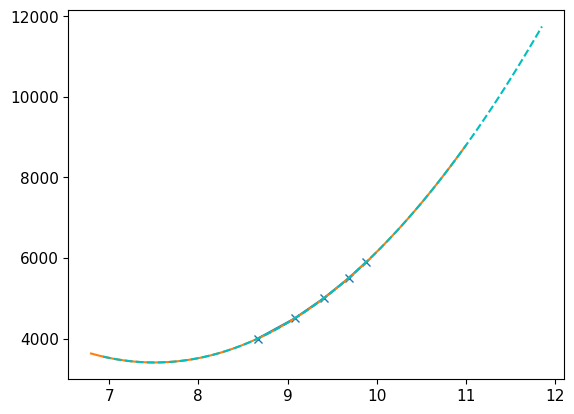
ind = np.where(stsmcsmooth.P <=550)[0]
plt.plot(stsmcsmooth.P[ind],stsmcsmooth.T[ind],'m-',linewidth=3,label='Fiducial melt curve')
plt.fill_between(stsmcsmooth.P,stsmcsmooth.T-150,stsmcsmooth.T+150,color='magenta',alpha=0.1)
ind = np.where(stsmcsmooth.P >=550)[0]
plt.plot(stsmcsmooth.P[ind],stsmcsmooth.T[ind],'m:',linewidth=3)
plt.plot(C43939.P,C43939.T,'.',color='b',markersize=1)
plt.fill_between(C43939.P,C43939.T-C43939.T_std,C43939.T+C43939.T_std, color='blue', alpha = 0.1)
plt.plot(C43941.P,C43941.T,'.',color='orange',markersize=1)
plt.fill_between(C43941.P,C43941.T-C43941.T_std,C43941.T+C43941.T_std, color='orange', alpha = 0.1)
plt.plot(C43943.P,C43943.T,'.',color='green',markersize=1)
plt.fill_between(C43943.P,C43943.T-C43943.T_std,C43943.T+C43943.T_std, color='green', alpha = 0.1)
plt.xlim(50,550)
plt.ylim(3000,20000)
plt.plot(cst_liquidus_P,cst_liquidus_T,'ko')
ind = np.where(cst_hug_liq.P > cst_wiggle_P2)[0]
plt.plot(cst_hug_liq.P[ind],cst_hug_liq.T[ind],'-',color='salmon',linewidth=2,label='New cst Hugoniot: liquid region')
ind = np.where((cst_hug_cacl2.P<cst_sol_cross.P) & (cst_hug_cacl2.P>80))[0]
plt.plot(cst_hug_cacl2.P[ind],cst_hug_cacl2.T[ind],'--',color='salmon',linewidth=2,label='New cst Hugoniot: solid region')
plt.xlabel('Pressure (GPa)')
plt.ylabel('Temperature (K)')
plt.legend(fontsize=lfss,title='Revised Coesite Hugoniot')
plt.show()
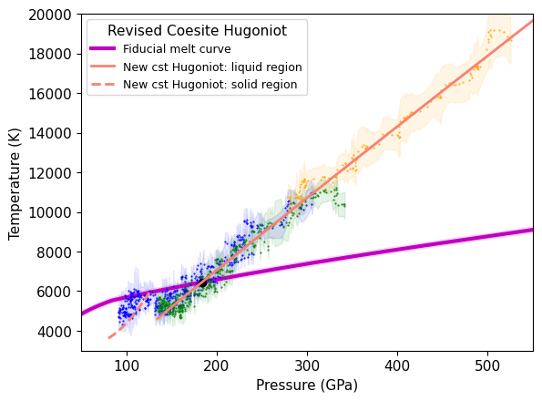
Check consistency between EOS and Hugoniot Fits#
pmodel=[]
for iii in range(len(cst_hug_cacl2.T)):
stvpvt.isotherm_stv(cst_hug_cacl2.T[iii])
pmodel.append(np.interp(cst_hug_cacl2.rho[iii],stvpvt.rhoarr,stvpvt.isotherm_p))
plt.plot(cst_hug_cacl2.rho,cst_hug_cacl2.P,label='fit to data')
plt.plot(cst_hug_cacl2.rho,pmodel,label='Model EOS P from rho-T')
plt.title('cst CaCl2 region: no lab data; hugoniot uses Solid EOS model')
plt.ylim(55,120)
plt.legend()
plt.xlabel('Density (g/cm3)')
plt.ylabel('Pressure (GPa)')
#plt.savefig(outputfigpath+'cst-cacl2-test.pdf')
plt.show()
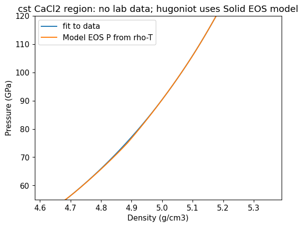